# Load required libraries
library(ggplot2)
library(tidyverse)Training Information
The goal of this workshop is to equip participants with the ability to recognize and produce data visualizations in accordance with the best practices of the field. Looking forward to meeting you all!
Venue
The workshop takes place at .. Hotel. The conference room is … Hall.
Before the workshop
Please try to have these installed before the training, if you have any trouble installing we will have a station on 18th April where you can come for assistance (The steps migt take approximately 15 minutes).
a. [Install R]( )
b. [Install and setup RStudio Desktop]( )
c. [libraries]( )
note
- All software used in this workshop are free.
- If you have any difficulties with the installation, support can be provided on the first day of the AMMnet meeting or before the session or during breaks.
Schedule
Friday April 19th
| Time | Session | |
|---|---|---|
| 15min before | Welcome Support for software installation |
|
| 15min | Introduction to data Visualization presentation | |
| 30min | Introduction to R Studio, Reading Data, GGplot | |
| 30min | coffee Break | |
| 50min | Line Plot, Scatter Plots and Exercise | |
| 30min | combination of line and Scatter & Exercise | |
| 20min | Winding up session & survey filling |
After the workshop
- Fill out the online post-workshop questionnaire (link to be provided after the workshop)
Getting Started with R and RStudio Installation Guide
Aim of this section
To provide you with a clear and concise instructions for installing R, RStudio, and R packages
Installing R
R is a powerfull programming language for statistical computing and graphics. It is one of main programming language used for data science (with other programming languages such as Python and Julia).
DOWNLOAD R
Visit the Comprehensive R Archive Network (CRAN) to download R which is a network of servers around the world that store identical up-to-date versions of code and documentation for R.
 Scroll down the page to locate the mirror that is the closest to your geographic location and click on its URL.
Scroll down the page to locate the mirror that is the closest to your geographic location and click on its URL.
Tip
Selecting a mirror that is close to you may help speed up the download. You can still use another mirror since the closest geographic location does not always give the best mirror.
For instance, when downloading R from Rwanda, you can select the mirror from South Africa.
CHOOSE YOUR OPERATION SYSTEM
Once on the CRAN page, select your operating system: Linux, macOS, or Windows.

Select binaries for base distribution

DOWNLOAD THE INSTALLER
Download the R installer (< 80 MB)
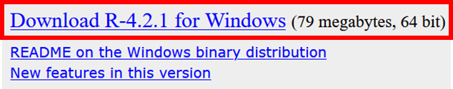
RUN THE INSTALLER
Locate the downloaded file in your computer’s Downloads folder and double-click to run the installation wizard.
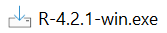
COMPLETE INSTALLATION
Follow the instruction in the installation wizard to complete the installation.

Install and setup RStudio Desktop
Rstudio is an integrated development environment (IDE) for R, providing a user-friendly interface for R programming.
Note
RStudio is moving away from its R-exclusive focus and becoming Posit in October 2022 to enable broader data science, scientific research, and technical communication functionalities and, in particular, to integrate Python users.
Important
In order for RStudio desktop to work with R you must have installed R on your computer, see Section A.1. RStudio does not include R when you download and install it.
DOWNLOAD RStudio
You can download R from the RStudio website. There are different RStudio products available, but the free Desktop version offers all necessary features for your analyses.
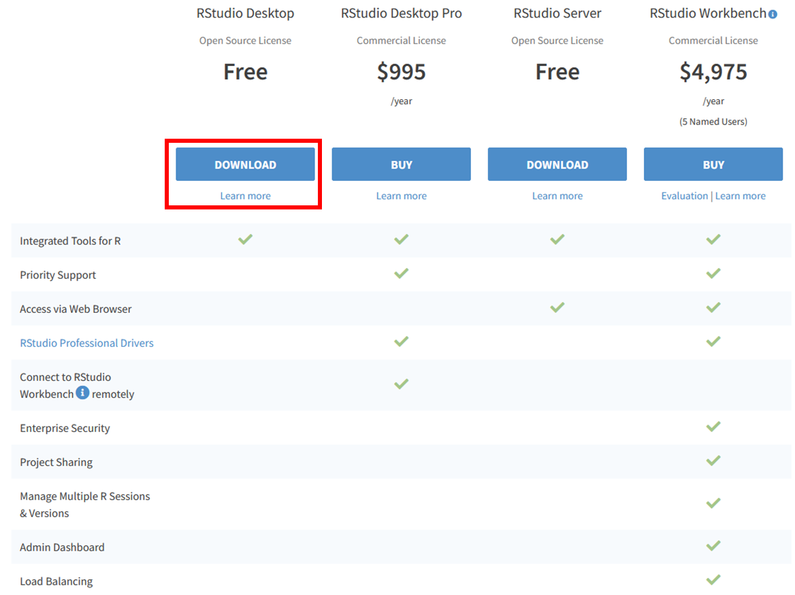
CHOOSE YOUR OPERATION SYSTEM
Download the RStudio Desktop installer compatible with your operating system.

RUN THE INSTALLER
Locate the downloaded file in your computer’s Downloads folder and double-click to run the setup.

COMPLETE INSTALLATION
Follow the instruction in the installation wizard to complete the installation process.

CONFIGURATION
After installing RStudio, open the application. Navigate to Tools > Global options to set your preferences.

Under the General options and the Basic tab:
Workspace
Uncheck Restore .RData into workspace at startup
Ensure that Never is selected for Save workspace to .RData on exit.
History
Uncheck Always save history (even when not saving .RData)
Uncheck Remove duplicate entries in history

Installing R packages
Note
A R package is a collection of functions, data, and compiled code in a well-defined format, created to add specific functionality to R.
There are 10,000+ user contributed packages and growing.
There is a set of standard (or base) packages which is considered part of the R source code and automatically available as part of your R installation. Base packages contain the basic functions that allow R to work, and enable standard statistical and graphical functions on data sets.
Open RStudio on your computer
In RStudio, you can install a new package by selecting Tools > Install packages… 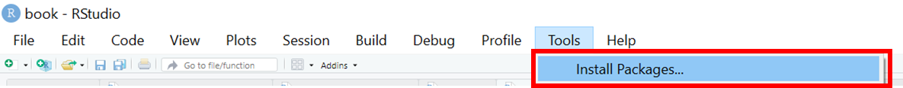
Enter the name of the package you want to install, or browse through available packages. Select the desired package(s) and click Install to add them to your R environment. 
Creating a new R Script
Aim:
Understanding how to create and save a new R script file in RStudio.
Go to file > New file > R Script
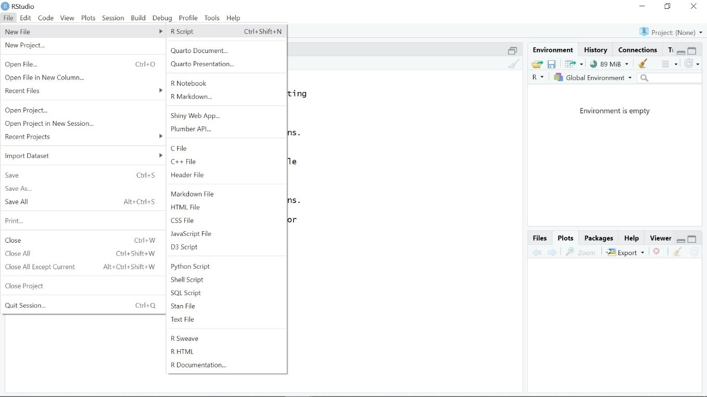
Save your R script in the folder of desired directory 
Understanding R Panes
Aim:
Familiarize yourself with the different panes in RStudio and their respective functionalities.
The Script Pane is where you write and edit your R code. It’s essentially your coding workspace. Here, you can create new scripts, open existing ones, and write or edit R code to perform various tasks like data manipulation, analysis, and visualization.

Here, you can execute temporary code snippets. The Console Pane is where R executes your code and displays the output. When you run code from the Script Pane, the results, errors, and messages are displayed in the Console Pane. It’s an interactive interface where you can directly interact with R, execute commands, and see immediate results. 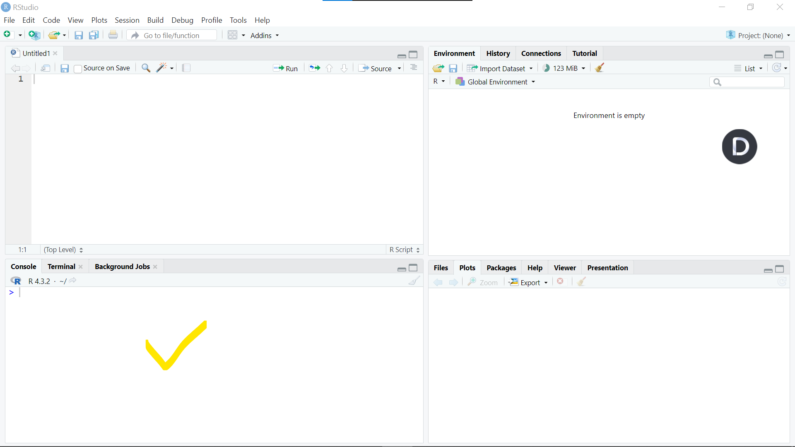
The Environment Pane provides a snapshot of your current R environment. It displays information about the objects (variables, functions, data frames) that are currently loaded into your R session. You can see the names, types, dimensions, and values of these objects. This pane is particularly useful for inspecting and managing your workspace during data analysis.

This pane serves multiple purposes:
Plots: When you create plots in R, they are displayed in the Plots Pane. You can interact with the plots, zoom in/out, save them, or export them as images.
Files: The Files Pane provides a file browser within RStudio. You can navigate through your directory structure, open files, create new ones, and manage your project files directly from this pane.
Viewer: The Viewer Pane displays HTML content generated by R, such as R Markdown documents, Shiny applications, or HTML visualizations. It allows you to preview these documents within RStudio.
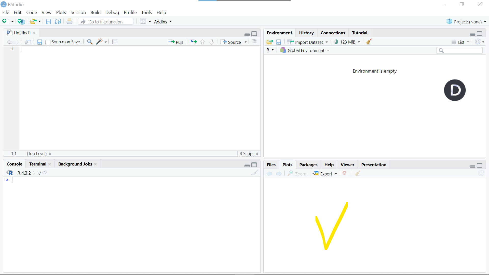
Managing Libraries
Aim:
Learn how to load and manage libraries for additional functionalities in R.
Ensure to call out libraries responsible for the task aimed to achieve. for visualization ggplot will be used and tidyvers for data reading and exploration/Manipulation.
Reading data
Aim:
Understand how to import data into R from various file formats on different directories.
You can read data from various file formarts like csv, excel and others.
Reading CSV Files
Ensure you save your data and R script in same folder
# Read CSV file
df <- read.csv("Mabangata_region_incidence2018.csv")When not in the same folder then copy the path/directory of the file ::: {.cell}
# Read CSV file from a different folder
df<- read.csv("C:/Users/shirgl/Desktop/SwissTPH/conferences&presentations/Ammnet/training materials/data_malariaAtlas/Mabangata_region_incidence2018.csv"):::
Reading Other File Formats
# Load library for Excel
# library(readxl)
# Read Excel file
# read_excel()# Load library for Stata
# library()
# Read Stata file
# read.dta()data manipulation to choose the data of under five and convert to date format
df$date_tested <- as.Date(df$date_tested,"%m/%d/%Y")
df_und5<- df %>% filter(age_group=="u5") Main objective
At the end of the training we intend to know how to produce this plot
ggplot(data=df,aes(x=date_tested, y= incidence))+
geom_line(size=1.5,aes(group=age_group ,col =age_group)) +
geom_point( size=1.2)+
labs(x="Date",y="incidence for 100000/month",title="malaria Incidence,2018")+
theme_bw()+
theme(plot.title = element_text(hjust=0.5), axis.text.x = element_text(angle=45,hjust=1))+
scale_x_date(date_breaks = "1 month", date_labels = "%B")
Understanding ggplot Library
The ggplot library is a powerful tool for creating data visualizations in R. It follows a layered approach to building plots, where each layer adds additional elements to the plot. Understanding how ggplot works can help you create sophisticated and informative visualizations.
Layers in ggplot
Aim:
Learn about the layered approach of ggplot.
Understand how each layer adds elements to the plot.
ggplot operates on a layered grammar of graphics, where you start with a base plot and add layers of data, aesthetics, and geometries. Each layer in ggplot adds a different aspect to the plot, allowing you to customize and enhance the visualization.
base_plot <- ggplot(data = df_und5, aes(x = date_tested, y = incidence))
base_plot
layered_plot <- base_plot +
geom_point()
layered_plot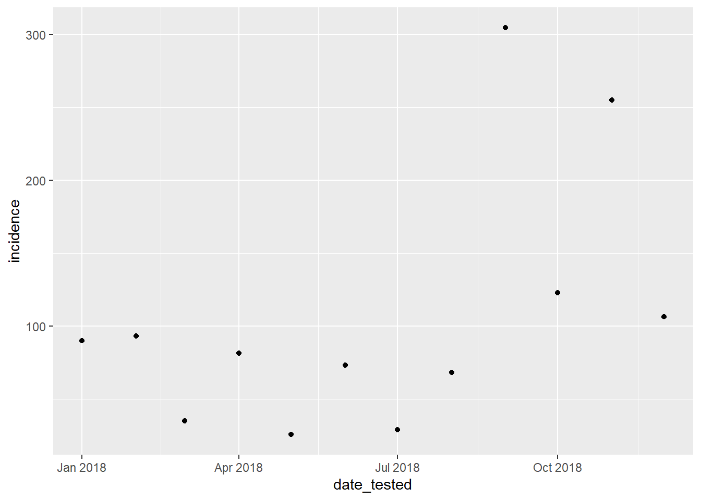
layered_line<- layered_plot +
geom_line(color="blue")
layered_line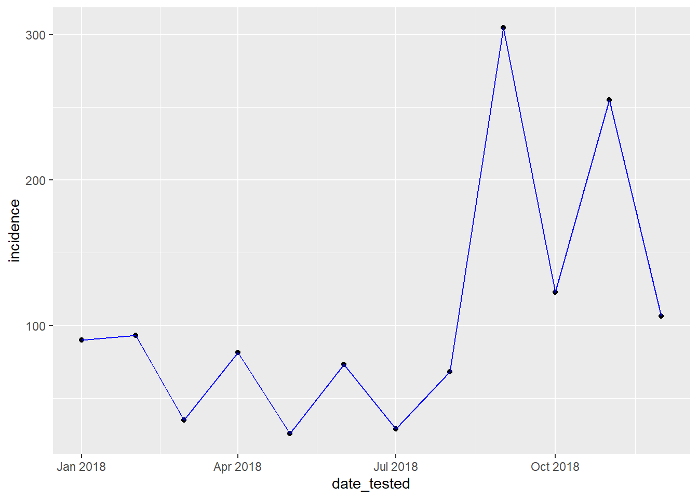
observing the line plot is on top of the points/scatter plot and on a bigger size (thickness) of the line the points wont be visible anymore
Tutorial:
How can we ensure the plots are visible at all time despite the size of the line, write the snippet code for this (arrange in the order that will ensure visibility of points).
layered_line + labs(title = "Mabangata incidence 2018")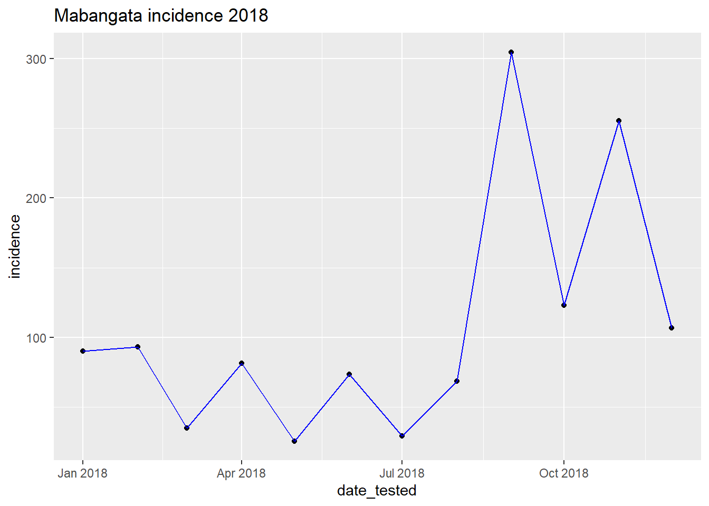
The aes Function
Aim:
Understand the role of the aes function in ggplot.
Learn when to use aes to map variables to aesthetics.
The aes() function is used to map variables to aesthetic properties such as x and y axes, colors, shapes, etc.
Variables specified within the aes() function are mapped to aesthetics and can vary across data points.
It’s important to keep variables that should vary across data points (e.g., data attributes) inside the aes() function.
the aes in the base position and altering the variables of x axis and y axis
ggplot(data = df, aes(x = date_tested, y = incidence)) +
geom_point()
ggplot(data = df, aes(y = date_tested, x = incidence)) +
geom_point()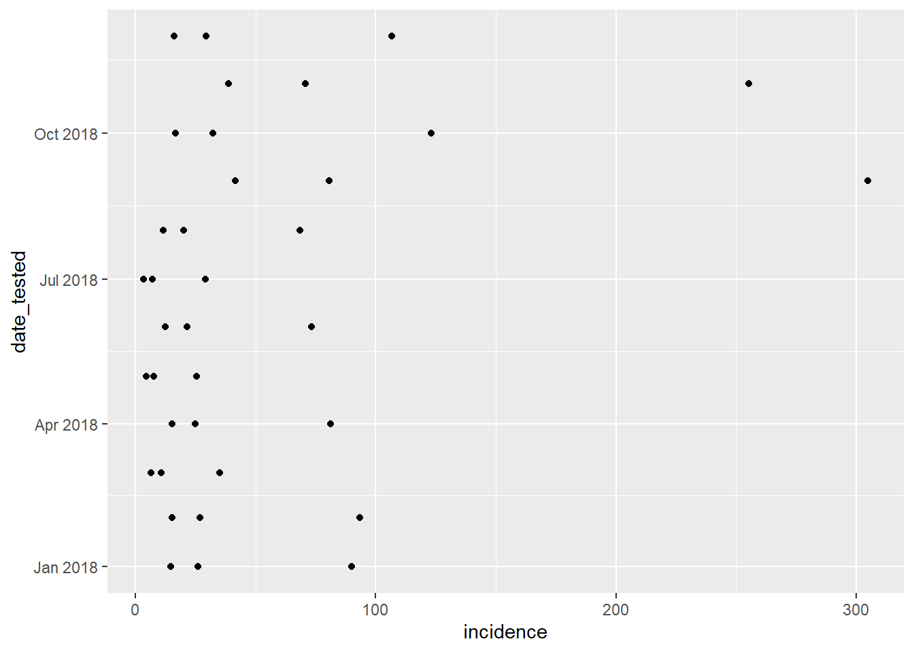
Tutorial:
show a scatter plot with y axis being confirmed cases (conf) and x axis being dates
ggplot(data = df, aes(x = date_tested, y = incidence),color = "green") +
geom_point( )
ggplot(data = df, aes(x = date_tested, y = incidence)) +
geom_point(color = "green" )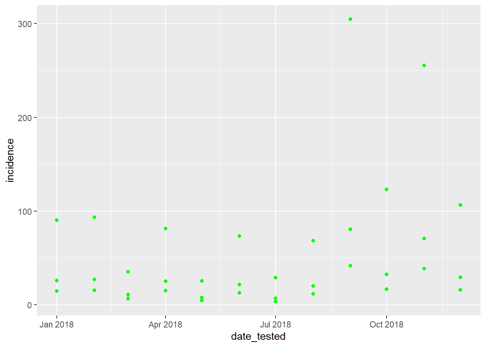
ggplot(data = df, aes(x = date_tested, y = incidence,color = "blue")) +
geom_point( )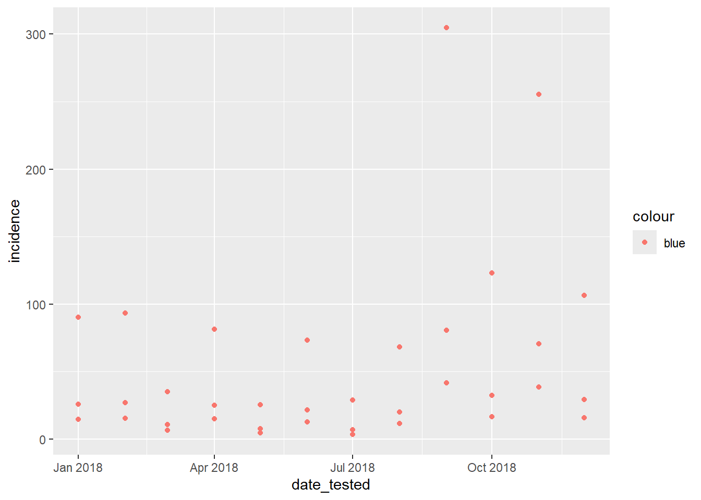
Tutorial:
change the color to blue
ggplot(data = df, aes(x = date_tested, y = incidence),color = age_group) +
geom_point( )
ggplot(data = df, aes(x = date_tested, y = incidence, color = age_group)) +
geom_point()
Tutorial:
use the data (df) to produce a scatter plot with confirmed cases as y axis and date_tested x axis. In the base plot inside the aes have the color=age_group instead
when the color option is not categorical but numeric then it indicates the level
ggplot(data = df_und5, aes(x = date_tested, y = incidence, color = incidence)) +
geom_point()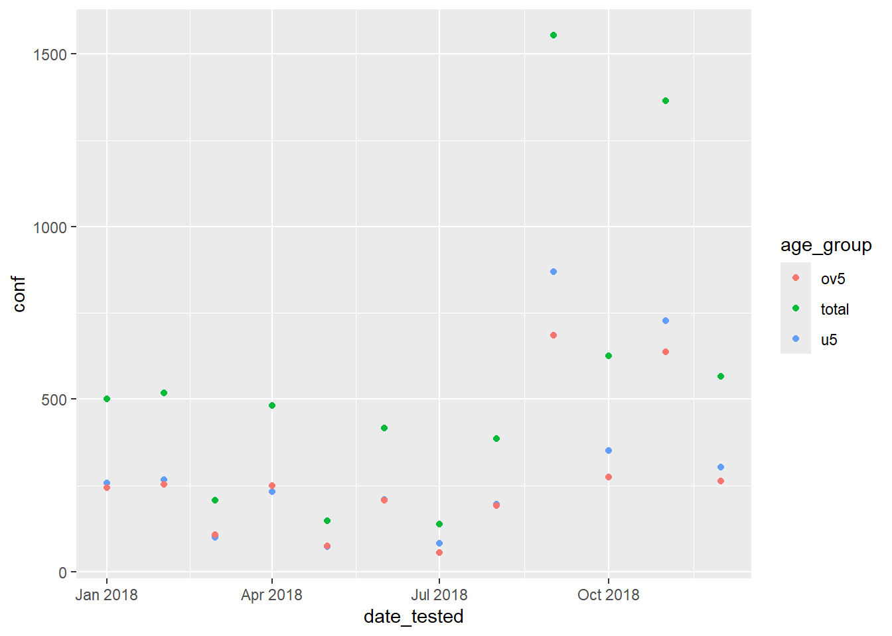
Creating a Line Plot
Aim:
Create a basic line plot using ggplot.
Elaborate the additional group=1 aesthetic
Explore customization options by adjusting line properties such as size, color, and line type.
why keeping group=1 Line plot have an additional aesthetic of group=, for a case when you intend to have one line for a one time variable then group=1
ggplot(data = df_und5, aes(x = date_tested, y = incidence)) +
geom_line(aes(group=1))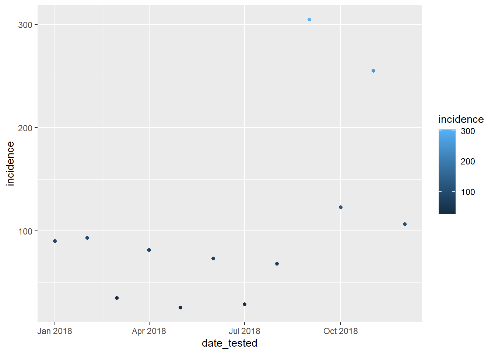
when displaying more than one line then
ggplot(data = df, aes(x = date_tested, y = incidence)) +
geom_line(aes(group = age_group))
ggplot(data = df_und5, aes(x = date_tested, y = incidence))+
geom_line(size=1,colour="blue",linetype="dashed")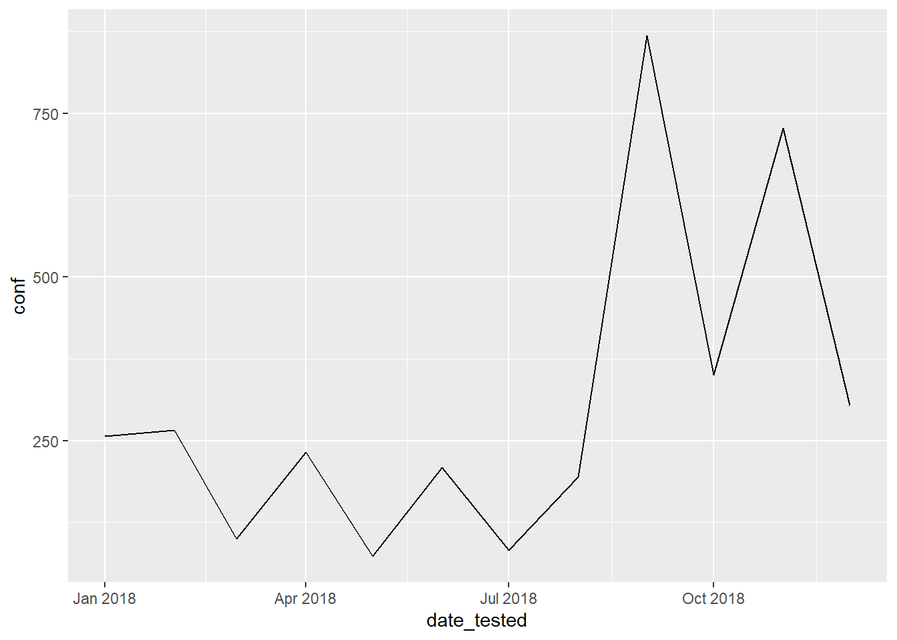
ggplot(data = df_und5, aes(x = date_tested, y = incidence))+
geom_line(size=2,colour="blue",linetype="dotted")In this example, we’re using the geom_line() geometry to create a line plot.
We specify the x-axis variable (date_tested) and the y-axis variable (incidence) within the aes() function. This creates a line plot showing how the incidence variable changes over time.
You can customize various aspects of the line plot using arguments within the geom_line() function. For example, you can change the size of the line, its color, and even its line type (“blank”, “solid”, “dashed”, “dotted”, “dotdash”, “longdash”, and “twodash”.). These customizations help to improve the readability and aesthetics of the plot.
Back to Layering
On changing the size of line to see how points cant be visible
layered_line<- layered_plot +
geom_line(color="blue",size=2)
layered_line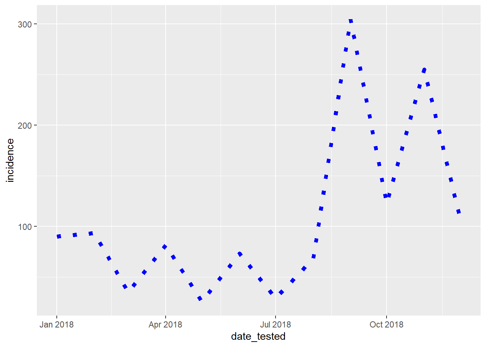
on the improvement of the previous then
layered<- ggplot(data= df_und5,aes(x=date_tested,y=incidence))+
geom_line(color="blue",size=2)+
geom_point()
layered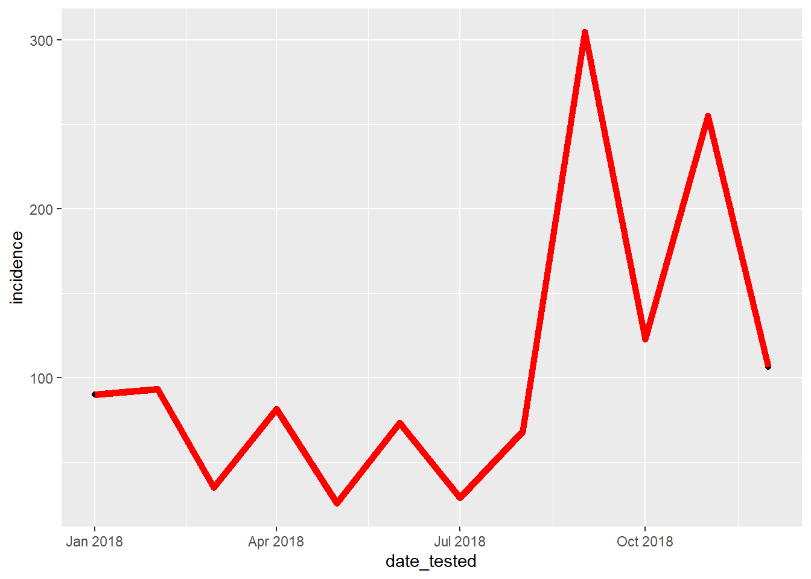
Tutorial:
Write a code snippet to create a basic line plot to visualize population, then customize the appearance of the line color to a red dashed line (Hint: use a df_und5 data).
Creating a Scatter Plot
Aim:
Understand the structure of a scatter plot using ggplot.
Adjust point properties such as color, size, and transparency.
ggplot(data=df_und5, aes(x=date_tested, y= incidence))+
geom_point()ggplot(data=df_und5, aes(x=date_tested, y= incidence)) +
geom_point(colour="blue",size=3.2,alpha=0.9, shape=1)
being specific according to your data when customizing
ggplot(data=df,aes(x=date_tested,y=incidence))+
geom_point(aes(shape=age_group))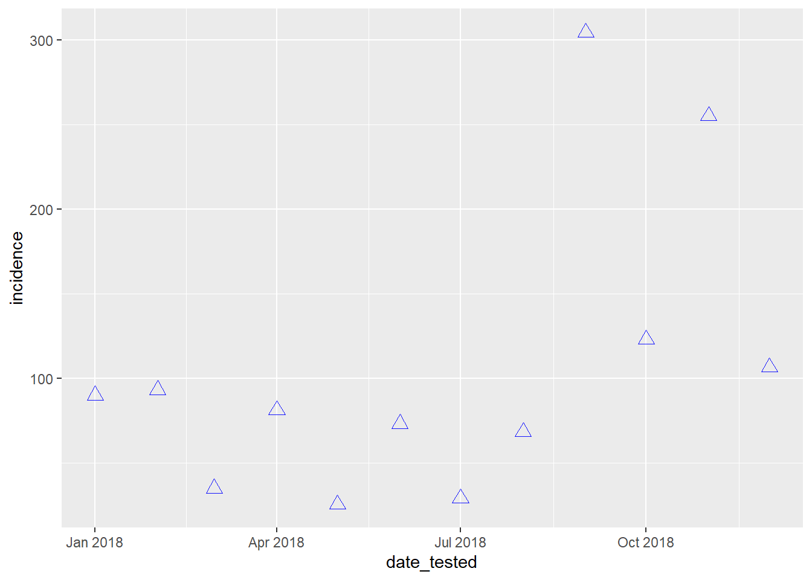
ggplot(data=df,aes(x=date_tested,y=incidence))+
geom_point(aes(size=incidence,shape=age_group))
Scatter plots are useful for visualizing the relationship between two continuous variables.
In this example, we’re using the geom_point() geometry to create a scatter plot.Each point represents a single data observation, with one variable plotted against the other.
You can customize various aspects of the scatter plot points using arguments within the geom_point() function.For example, you can change the color, size, and transparency of the points to highlight certain patterns or trends in the data. ::: {.cell}
:::
Tutorial:
- Write a code snippet to create a scatter plot as shown in the image below. (Hint: use the df dataset with changing color aesthentic)
ggplot(data=df,aes(x=date_tested,y=incidence))+
geom_point(aes(color=age_group))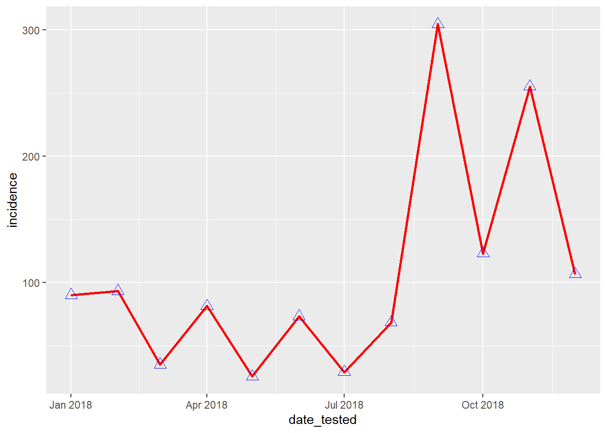
- Create a scatter plot for confirmed cases in the Y axis and date_tested x axis with shapes of age_group and size of confirmed cases
combination of line and scatter plot
Aim:
Understand how to combine line and scatter plots in ggplot. Visualize trends and individual data points simultaneously.
Combining line and scatter plots allows you to display both trend information (through the line) and individual data points (through the scatter). This is useful for scenarios where you want to show both the overall trend and the variability of the data points around that trend.
##line and point
#ggplot(data=total_df, aes(x=date_tested, y= incidence))+
#geom_line(size=1,colour="blue")+
#geom_point(colour="red",size=3.2,alpha=0.7, shape=1)
Tutorial:
Write a code snippet to create a combined plot showing both trends of incidence and individual data points for prevalence. Adjust the color of points in a combined plot.
Customizing plots for presentation and publication purpose
Aim:
Learn how to customize plots for presentation and publication. Adjust plot elements such as titles, labels, themes, and scales.
Customizing plots is essential for making them more visually appealing and informative for presentation or publication.
Elements such as titles, axis labels, and themes can be customized to enhance readability and aesthetics. Scales can be adjusted to ensure that the data is displayed in a clear and meaningful way.
#ggplot(data=total_df, aes(x=date_tested, y= incidence))+
# geom_point(colour="blue", size=4.2)+
# labs(x="Date",y="incidence for 100000/month",title="malaria Incidence,2018")+
#theme_bw()+
#theme(plot.title = element_text(hjust=0.5), axis.text.x = element_text(angle=45,hjust=1))+
#scale_x_date(date_breaks = "1 month", date_labels = "%B")Customization and Layering
Aim:
Explore customization options in ggplot. Understand how to layer multiple elements in a plot.
ggplot allows for extensive customization of plots, including changing colors, sizes, labels, and more.
You can layer multiple geometries (e.g., points, lines) and additional elements (e.g., labels, titles) onto a single plot to create complex visualizations.
Layers are added sequentially, with each layer building on top of the previous ones, allowing for fine-grained control over the plot’s appearance.
# # Customizing and layering
# ggplot(data = my_data, aes(x = x_variable, y = y_variable)) +
# geom_point() + # Add points
# geom_smooth(method = "lm") + # Add regression line
# labs(title = "Scatter plot with Regression Line", x = "X-axis label", y = "Y-axis label") # Add title and axis labels
Tutorial:
create the following plot